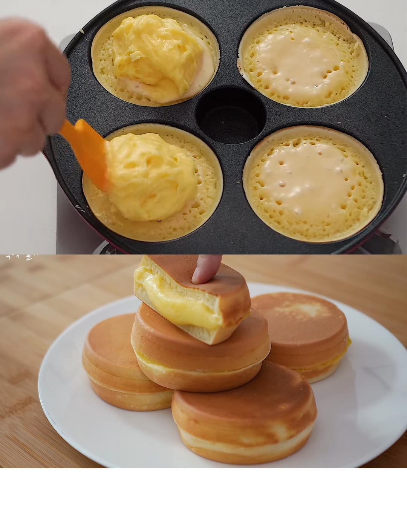
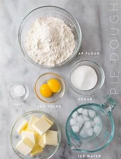

CUSTARD CREAM PANCAKE
Prepare to indulge in a delightful breakfast treat with our Custard Cream Pancake recipe. This fluffy pancake is filled with a rich custard cream, making it a perfect start to your day or a sweet afternoon snack.
This meal is a go-to; Anywhere, Anytime. With it's rich custard and milk flavour wrapped in whatever, you can take it with anything, any sauce and any drink. The best part? It's totally easy and free to make
Recipe Details
Preparation Time: 10 MINUTES
Cooking Time: 40 MINUTES
Number of Servings: 3 OR MORE
Difficulty level: BEGINNNER; TOTALLY EASY
Ingredient:
Dough Ingrediemts;
- 180g cake flour
- 2 Eggs
- 30g Sugar
- 2g Salt
- 30g Cooking Oil
- 3g Baking Powder
Custard Cream Ingredients;
- 3 Egg Yolks
- 300g Milk
- 60g Sugar
- 20g Corn Starch
Instructions:
- Prepare the pancake dough by adding all dough ingrediemts listed above,till the batter is smooth
- Mix the custard cream, adding all custard cream ingreidents. Be sure to prevent lumps
- Place the saucepan over medium heat, until it's well cooked into custard. Remove once thick
- Make your pancakes witht he already made butter, till they're golden brown or any desired colour
Assemble the pancakes, spread a layer of custard cream on one and cover it with another pancake. Repeat this for all pancakes
- Serve with your choice of sauce or drink, and enjoy your delicious Custard Cream Pancake!
TIPS:
- For fluffier pancakes, ensure not to overmix the batter.
- Use a non-stick pan to prevent pancakes from sticking and for easy flipping.
- Cook pancakes on medium heat to avoid burning and ensure even cooking.


Enjoy your cooking adventure with this Custard Cream Pancake recipe! It's a delightful way to start your day or treat yourself to something special.
Happy Cooking!